01 Service Marketplace
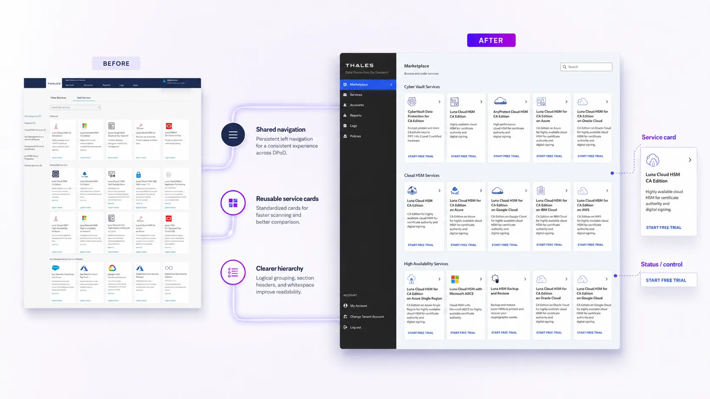

DPoD is Thales’ cloud-based platform for deploying and managing cryptographic services that help organizations protect sensitive data and encryption keys. As the product evolved, its interface accumulated custom patterns that no longer aligned with the broader Thales security portfolio.
I led a six-month, product-wide redesign that aligned DPoD with the Imperva design system while preserving the complex enterprise workflows customers relied on. The work included a comprehensive UI audit, design-system gap analysis, reusable component contributions, and the redesign of DPoD’s core product experience. This case study highlights four representative workflows to demonstrate how the new system was applied.
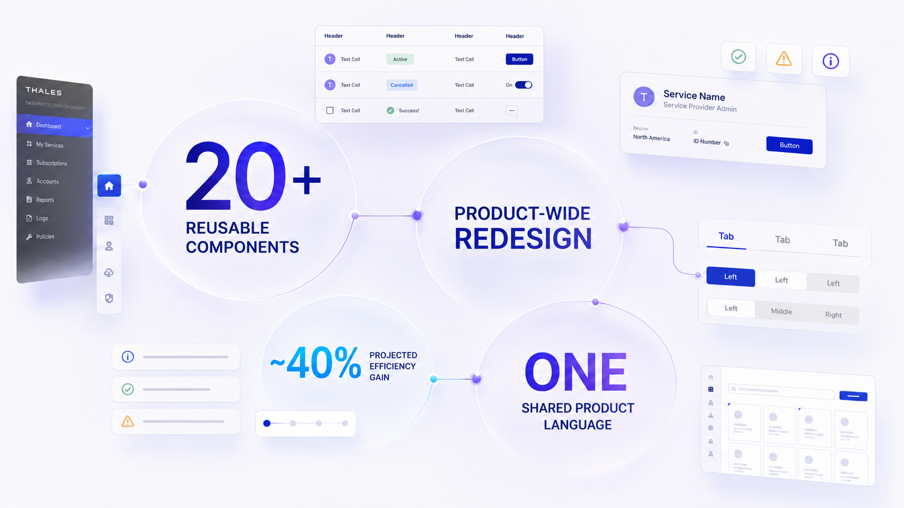
DPoD and Imperva had evolved independently within the same security ecosystem. Their typography, navigation, components, and interaction patterns looked and behaved differently, while many DPoD interfaces relied on product-specific UI rather than shared system components.
This inconsistency made the product less predictable for users and forced design and engineering teams to maintain parallel solutions for similar needs. Without a shared foundation, every new workflow risked adding another local pattern.
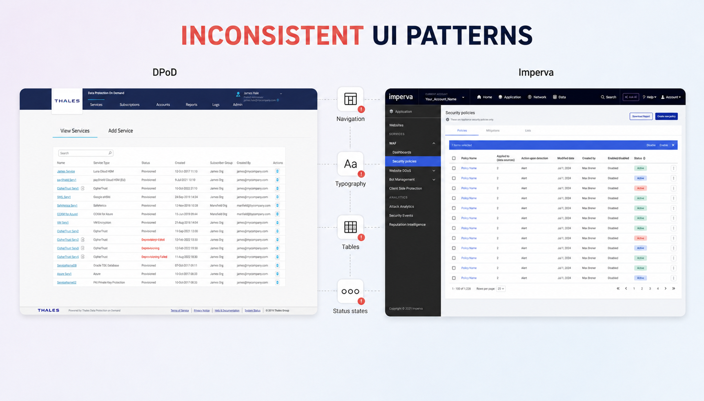
The UI audit revealed three system-level issues:
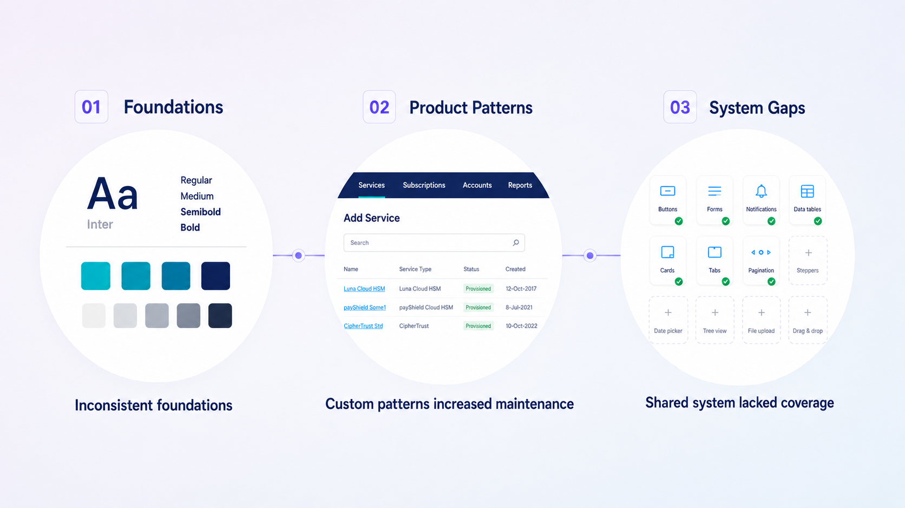
I structured the redesign around four stages: audit the existing DPoD experience, map product patterns to the shared Imperva system, contribute missing components and variants, and apply the expanded system across complete workflows.
Three principles guided decisions throughout the process: adopt established patterns where they supported the workflow, preserve the clarity of familiar enterprise tasks, and extend the system only when DPoD introduced a validated product need.
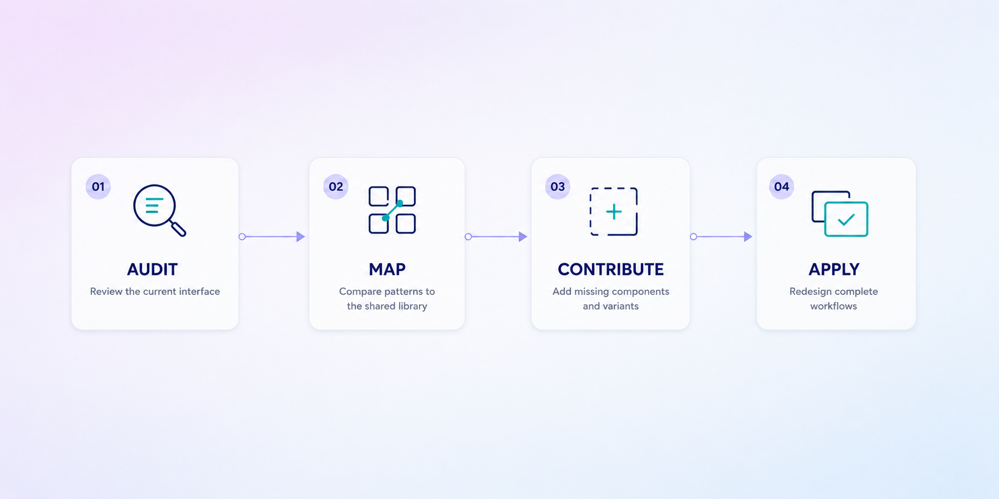
Rather than treating the work as a one-time visual refresh, I proposed a three-layer model: shared Imperva foundations, reusable components adapted for DPoD, and complete service-management workflows.
This approach created consistency at the system level while preserving the navigation, data density, service states, and task structure required by an enterprise security platform.
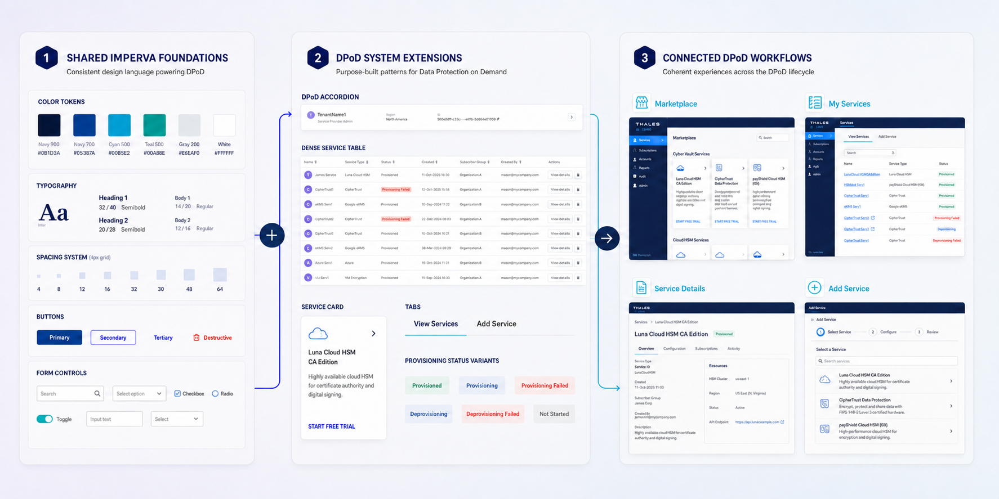
Adopting the shared system was not a binary decision. Some foundations and controls could be reused directly, while navigation, data-heavy tables, service states, and task-specific interactions required adaptation or additional coverage.
I evaluated each pattern through an adopt, adapt, or extend framework. This allowed DPoD to gain consistency without forcing specialized enterprise workflows into components that were not designed to support them.
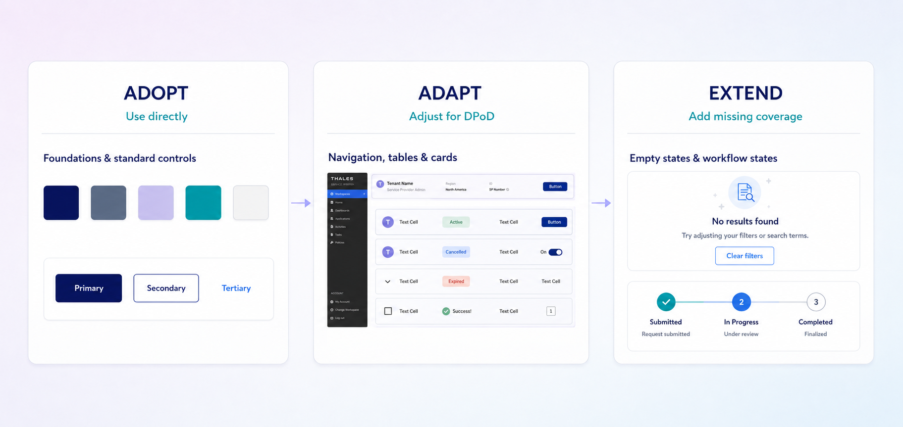
When the shared system could not support a validated DPoD requirement, the fastest solution would have been to create another local component. However, that would reproduce the fragmentation the redesign was intended to resolve.
Instead, I defined reusable navigation, table, tab, icon, and state variants and contributed them back to the shared library. This supported DPoD’s immediate workflows while expanding the Imperva design system for future enterprise use cases.
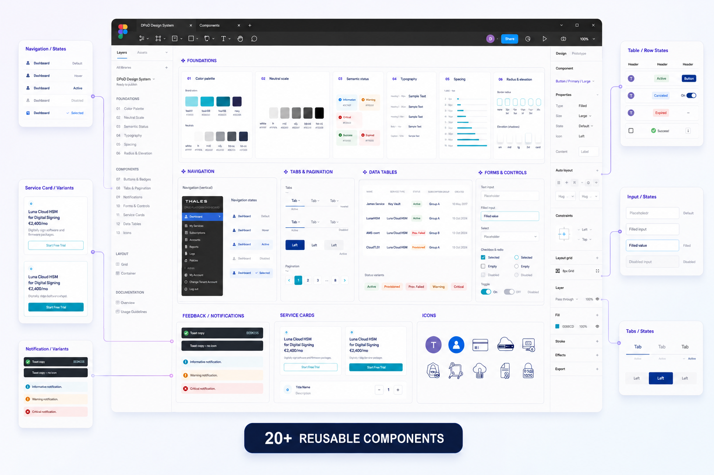
A scalable system could not be validated through isolated interface updates. It needed to support the connected workflows, information density, product states, and task structures found throughout DPoD.
I applied the redesigned system across the broader product experience. This case study highlights four representative workflows—Service Marketplace, My Services, Service Details, and Add Service—to demonstrate how the new foundations and components translated into real product use.

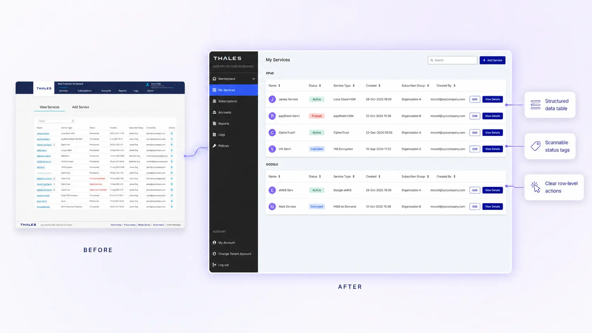
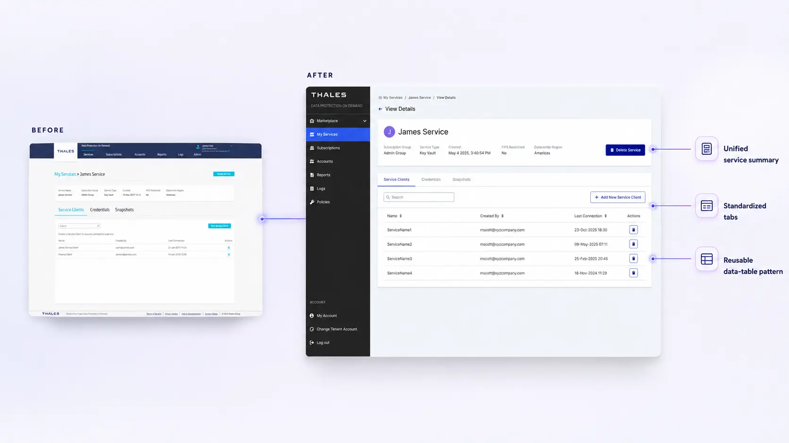
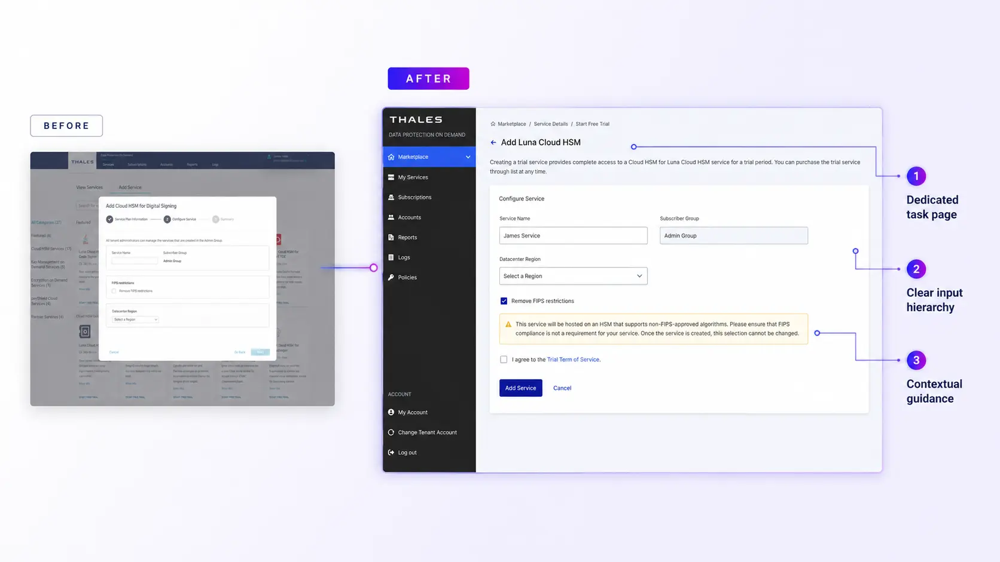
The product-wide redesign replaced fragmented interface patterns with reusable foundations and contributed more than 20 new components and variants to the shared Imperva design system. Based on the reduction in repeated implementation work, the new system was projected to improve design and development efficiency by approximately 40%.
Aligning DPoD with the broader Thales security portfolio also created a more predictable experience for customers moving between products. This reduced relearning, strengthened product cohesion, and established a scalable foundation for faster feature delivery, future adoption, and long-term commercial growth.